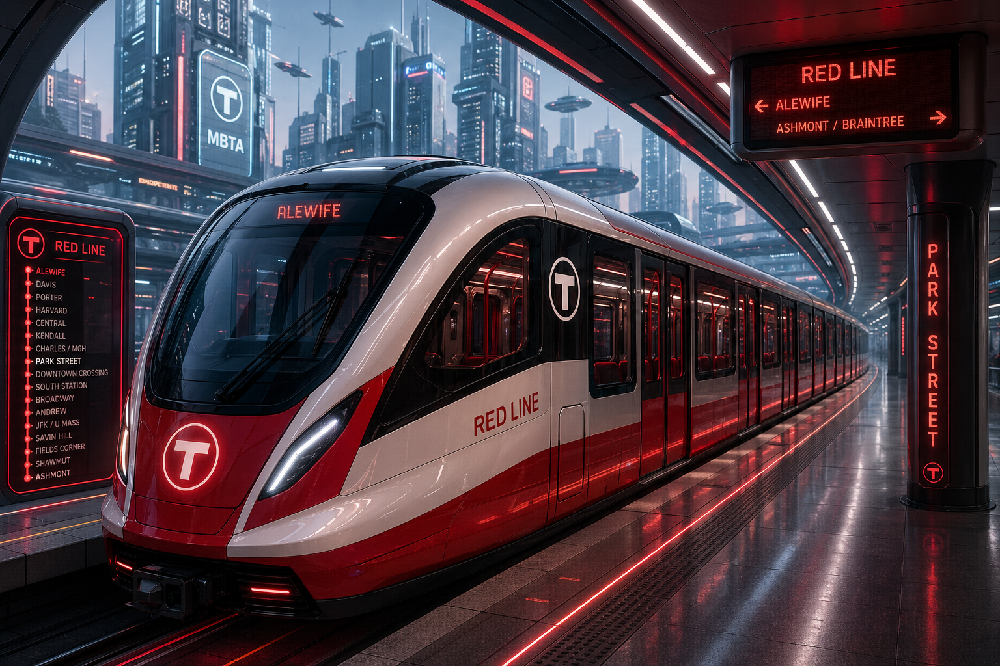

Is the transportation authority improving or declining?
The highest ridership was seen in early 2020, at 17.5m monthly riders. Since the dip down to 1.4m in 2020 due to covid, there has been an upward trend. Ridership in March of 2026 is around 75% of what it was in early 2020. The major changes in ridership are due to covid and can be affected by outside factors such as prices of other modes of transportation, so they cannot be viewed as a direct indicator of the state of the subway lines or how content riders are. Despite this, looking at ridership data can help us see if there is a relationship between number of riders and other metrics.
Headway is the time between trains. Longer headways means more time spent waiting at the station for the next train. Headways peaked in December of 2022 at 10.36 minutes, and have come down to 6.97 minutes; a 33% reduction.
Alerts are a time when service is affected by events such as maintenance, weather, and signal issues. Effects can range from a delay by some number of minutes, to multi-day service suspension. The quantity of alerts has increased since late 2022 and has become more volatile since late 2024.
The number of predictions and accurate predictions have varied over time, but the percent of predictions that were accurate has stayed around 80% with a very slight downward decline.
Ratings remained in a decline from 2020 until the start of 2024. From then ratings increased and remained steady since 2025.
In the past several years, different metrics moved in different directions, but the trend leans positive. Headways have fallen 33% from their 2022 peak, and customer ratings declined and then rebounded, recovering since 2023 after a multi-year decline. Predictions have roughly stayed the same. The uptick in alerts may make it appear that things are getting worse, but this may be due to planned shutdowns for repairs or upgrades, which improve service in the long run. Taken together, the metrics point toward a system that is actively being worked on. It seems like the MBTA is getting better.